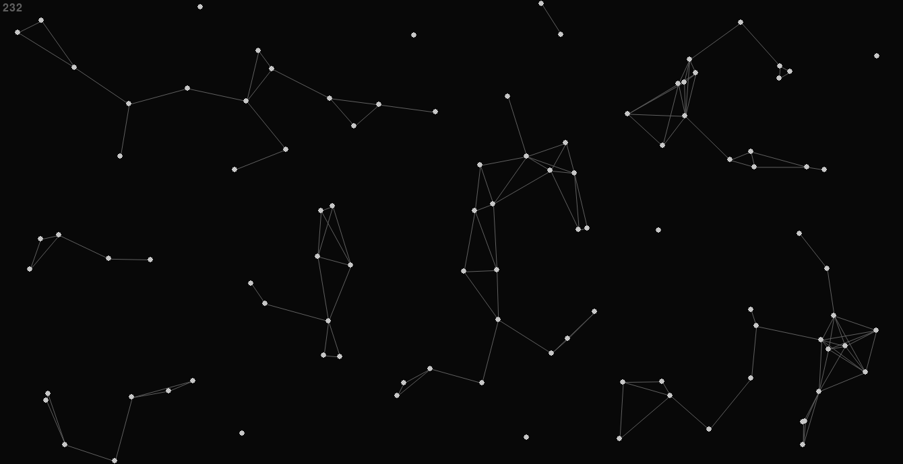
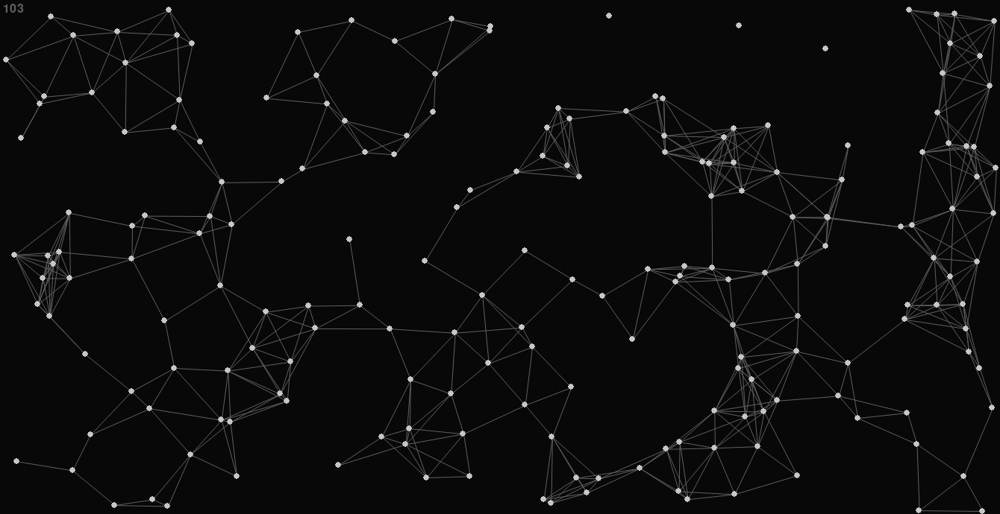

Python: Chunk Optimization
I have been improving my Python programming skills for a while now. I am satisfied with the knowledge and skills I have acquired so far, but I also want something more concrete, more specifically involving graphics. I had been thinking about project ideas, but this one started not as a project, but as an experiment. In this project, we generate a random set of points on a plane and draw a line between points that are at most 100 units apart.
The challenge is that the naive algorithm, where for each point we iterate over all other points to check if they are close enough to each other, has a time complexity of O(n^2). Given that Python is an interpreted language, it is only expected that this approach slows down to 10 frames per second (FPS) when only a mere 100 points are generated.
The technique I used to solve this problem is a technique commonly used in games: chunk optimization. I divided the plane into square chunks of the same dimensions as the maximum line length. This way we ensure that there is a line between all points that are at a distance from each other that is less than the specified maximum line length. I used classes to organize my code and this helped a lot during the development. Here are two images with 100 and 200 points respectively and the FPS in the upper left corner:
 